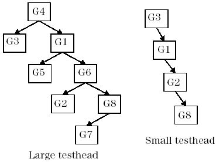

DFCR, DFCR? - (DeFine Clock Routing)
The DFCR(DeFine Clock Routing) command serves to change the clock routing within the hardware groups. The DFCR? query displays the complete clock routing, but only if it is not the default routing.
Mode of operation
Clock signals can be routed from one group to another according to the following hierarchical order:

Every hardware group except the root group (G4) provides two clocks, one local and the other inherited from its predecessor. The root group only provides the local clock.
The inherited clock can be the local clock of the predecessor, but it can also be the clock which the predecessor inherited from his predecessor. By default, the local clock of the root group is the inherited clock of all other groups.
The DFCR command routes the local clock of one group, the source group, to another group, the destination group, as its second clock, provided that the source group precedes the destination group in the hierarchy tree. All other necessary adaptations will be made automatically.
The routing can be reset to the default with RSET FCR.
DFCR
DFCR {source_group},{dest_group}
DFCR?
DFCR?returns (for every group except G4):
DFCR {source_group},{dest_group}
Parameters
source_group |
specifies the hardware group whose local clock is to be routed to dest_group. The format is Gx, where x is the group number. |
dest_group |
specifies the hardware group whose inherited clock is to be changed. |
Application
Clock Routing tool.
Errors
An error is generated if the source group does not precede the destination group in the group hierarchy.
Example
> DFCR? < > DFCR G1,G8 > DFCR? < DFCR G4,G3 < DFCR G4,G1 < DFCR G4,G5 < DFCR G1,G6 < DFCR G1,G2 < DFCR G1,G8 < DFCR G1,G7
This example changes the default routing (DFCR? gives an empty reply). Note that the inherited clocks of G6 and of all successors of G6 are also changed.
Functional changes
- Introduced before SmarTest 6.3.2